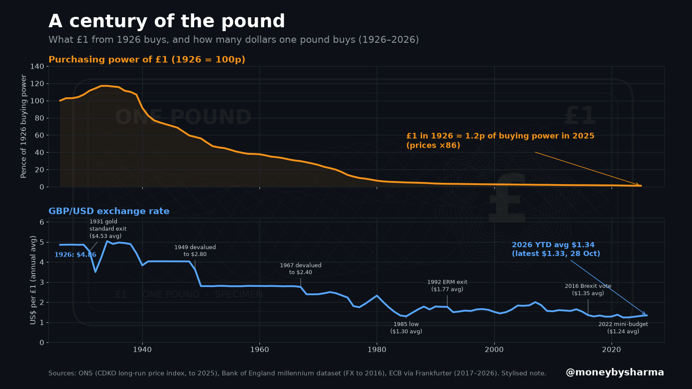

I want to start with something that surprised me when I first worked it out. Money sitting still isn't really sitting still. If it's in a drawer, a current account, or a savings account paying less than inflation, it buys a bit less every year. Nobody takes it from you. Prices just creep up, and your pounds stretch less far.
That's why I think understanding money matters so much. Saving is a great habit. But if your long-term money only ever sits in cash, it can quietly lose ground. Over the long run, investing sensibly is how most people grow their wealth.
What inflation actually is
Inflation is the rate at which prices rise over time. If inflation is 3%, something that cost £100 a year ago costs about £103 today. Your £100 note hasn't changed, but it now buys a little less. Economists call this losing purchasing power (or buying power).
The Bank of England tries to keep inflation at 2% a year. Right now it's above that. The Office for National Statistics' latest figure shows Consumer Prices Index (CPI) inflation at 3.5% in the 12 months to September 2026, and the Bank of England's interest rate (Bank Rate) is 3.75%. Bank Rate affects the interest banks pay on savings, so it's worth checking whether your own savings rate is actually beating inflation. Many easy-access accounts and most current accounts don't.
The 100-year picture
Here's what a century of rising prices looks like.

Using the ONS's long-run Retail Prices Index (an older measure of how prices change), the index stood at 18.5 in 1926 and 1,588.6 in 2025. That means prices rose roughly 86 times over the century. Put another way, £1 from 1926 buys only about 1.2p worth of what it did back then.
The pound has weakened against the US dollar too: about $4.86 in 1926 compared with roughly $1.33 on 28 October 2026.
Nobody keeps cash under the mattress for 100 years, of course. But the same thing happens on a smaller scale over any decade.
A simple worked example (illustrative)
Let's keep the maths simple. These numbers are illustrative only, not a forecast:
- You hold £10,000 in cash earning 0% interest.
- Inflation averages 3% a year for 10 years.
After 10 years you'd still have £10,000. But it would buy only about £7,440 worth of what it buys today (£10,000 ÷ 1.03¹⁰). That's roughly a quarter of its buying power gone, without you spending a penny.
Interest helps. If your savings rate matches or beats inflation, you keep up. The problem is cash that earns little or nothing for years at a time.
So what can you do? A sensible order
I don't think the answer is "put everything into the stock market." Investing has real risks, and the order you do things in matters. Here's the order most guidance suggests.
1. Build an emergency fund in easy-access cash first
Cash is the right home for money you might need soon. Many guides suggest 3–6 months of essential spending (rent or mortgage, bills, food, travel) in an easy-access savings account (see MoneyHelper on emergency savings (opens in new tab)). This is your safety net, so you're never forced to sell investments at a bad time or reach for a credit card. Shop around for a decent rate. See my guide to budgeting and emergency funds.
2. Pay off expensive debt
If you're paying 20% or more on a credit card, clearing it is a guaranteed "return" that's very hard to beat by investing. Deal with high-interest debt before you invest. See credit scores and debt help.
3. Invest money you won't need for at least 5 years
Investing means buying a share in things like companies (shares, also called equities) or lending to governments and firms (bonds). Over long periods, shares have historically tended to grow faster than inflation, but there's no guarantee. Prices can fall sharply, sometimes for years.
The value of investments can go down as well as up, and you may get back less than you put in.
That's why time matters. Money you'll need within five years usually belongs in cash. Money for 10, 20 or 30 years from now has time to ride out the bad patches.
4. Use tax wrappers
A tax wrapper is like a protective box around your money that shields it from tax.
- Stocks & Shares ISA: you can put in up to £20,000 a year (across all your ISAs) and pay no UK tax on the growth or income, and none when you take money out.
- Pensions: you get tax relief on what you pay in, and workplace pensions often come with your employer's contributions on top. That's extra money. The trade-off is that you can normally only access it from age 55 (rising to 57 from 6 April 2028) (opens in new tab).
More detail in my guides to investments and ISAs and pensions.
5. Keep it simple, low-cost and spread out
You don't need to pick individual shares. Many people use low-cost, diversified funds. A fund pools money from lots of investors to buy many different investments at once. Diversified means spread out, so one company or country having a bad year doesn't sink you. Index funds (also called tracker funds) simply follow a whole market, and they usually have low fees.
Fees matter more than they look. A 1% difference each year compounds over decades, just like returns do. See the power of compounding.
The honest bottom line
Cash is essential for your emergency fund and short-term plans. But cash you won't touch for many years, earning less than inflation, is quietly getting poorer. Understanding how money works, and putting long-term money to work sensibly, is how most people build wealth over time.
Investing isn't the only option and it's never guaranteed. If you're unsure, the government-backed MoneyHelper (opens in new tab) service offers free guidance, or you can speak to an FCA-authorised financial adviser.
Sources
- ONS – CPI annual rate (D7G7), September 2026: 3.5% (released 21 October 2026): https://www.ons.gov.uk/economy/inflationandpriceindices/timeseries/d7g7/mm23 (opens in new tab)
- Bank of England – Bank Rate 3.75%, inflation target 2%: https://www.bankofengland.co.uk/monetary-policy/the-interest-rate-bank-rate (opens in new tab)
- ONS – Retail Prices Index long-run series (CDKO): https://www.ons.gov.uk/economy/inflationandpriceindices/timeseries/cdko/mm23 (opens in new tab)
- Bank of England – A millennium of macroeconomic data (GBP/USD 1926): https://www.bankofengland.co.uk/statistics/research-datasets (opens in new tab)
- GOV.UK – Individual Savings Accounts (ISA allowance £20,000, 2026 to 2027 tax year): https://www.gov.uk/individual-savings-accounts (opens in new tab)
- GOV.UK – Increasing normal minimum pension age (55 to 57 from 6 April 2028): https://www.gov.uk/government/publications/increasing-normal-minimum-pension-age (opens in new tab)
- MoneyHelper – How much to save for an emergency (3–6 months of essential outgoings): https://www.moneyhelper.org.uk/en/savings/types-of-savings/emergency-savings-how-much-is-enough (opens in new tab)
- ECB reference rates via Frankfurter (GBP/USD, 28 October 2026): https://www.frankfurter.app/ (opens in new tab)
Information, not financial advice.